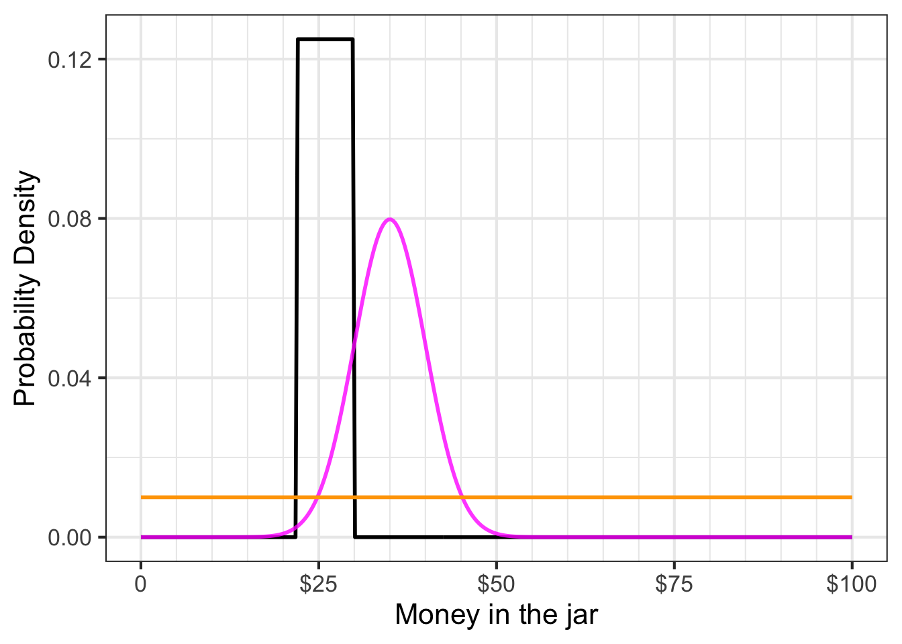

51 Probability and evidence
We often deal with situations of uncertainty, situations where only partial predictions are possible. For instance, we can say whether a person may be at high risk for a disease, say, diabetes or lung cancer. But this does not let us predict with certainty whether the person will get the disease. Instead, the term “high risk†indicates that we know something but not everything about the situation: not whether or not the person will get the disease but whether they are “likely†to have or to get it. Another example: a car might be said to be “unreliable.†We do not mean by this that the car cannot be used. Rather we are thinking that from time to time the car might fail to start or run. A car where this happens once over a few year span is reliable, a car where this happens on a month-to-month basis is not reliable.
You may well have had some textbook exposure to probability as an intellectual field. Typical examples used to illustrate concepts and methods are coins being flipped, dice being tossed, and spinners spun. Colored balls are drawn from urns, slips of paper from hats, and so on. Each of these is a physical representation of an idealized mechanism where we feel sure we understand how likely each possible outcome is to happen.
In this chapter, we will use two basic imagined settings where uncertainty comes into play: the risk of disease before the disease is diagnosed and the safety of a self-driving car as it comes out of the factory. The word “imagined†signals that you should not draw conclusions about the facts of any particular disease or any particular self-driving car; we are merely using the imagined settings to lay out concepts and methods for the mathematical presentation and analysis of uncertainty and risk. Of particular importance will be the mathematical means by which we represent our knowledge or belief in these settings and the way we can properly update our knowledge/belief as new information becomes available.
Definitions: Probability function names
The calculus of probability and data introduces an additional convention for describing and naming functions. Throughout this book, the names have reflected the “shape†of the function—exponential, sinusoidal, sigmoid, etc.—or the route by which the function was constructed, e.g. differentiation, anti-differentiation, inversion. Probability calculations involve not only the shapes of functions but also the properties mandated by the role each function plays in the calculation. An analogy is the assembly of an automobile out of different kinds of components: wheels, motors, body, and so on. You cannot put a wheel where the motor should go and produce a proper automobile. All motors play the same sort of role in the function of an automobile, but they can have different “shapes†such as gasoline, diesel, or electric.
To understand how cars are built, you have to be able easily to distinguish between the different kinds of components. This is second nature to you because you have so much experience with automobiles. Likewise, to understand the probability calculations, you will have to master the distinctions between the roles functions play in a calculation. In this chapter you will see probability density functions and relative density functions as well as likelihood functions and prior functions and posterior functions and some others. As you get started, you will confuse these roles for functions with one another, just as a newborn child can confuse “wheel†with “motor†until experience is gained.
Make sure to note the role-labels given to the functions you are about to encounter. We will start with probability density functions.
51.1 Probability density
A probability, as you may know, is a dimensionless number between zero and one (inclusive). In this chapter, you will be dealing with functions relating to probabilities. The input to these functions will usually be a quantity that can have dimension, for instance, miles driven by a car. For some of the functions we will see in this chapter, the output will be a probability. For other functions in this chapter, the output will be a probability density.
Probability relates to the abstract notion of an event. An event is a process that produces an outcome. For instance:
- Flipping a coin is an event where the possible outcomes of H and T.
- Taking a medical screening test is an event where the outcomes are “positive†or “negative.”
- Throwing a dart at a bullseye is an event where the outcome is the distance of the impact point from the center of the bullseye.
An event with a discrete outcome—coin flip, medical screening test—can be modeled by assigning a probability number to each of the possible outcomes. To be a valid probability model, each of those assigned numbers should be greater than or equal to zero. In addition, the sum of the assigned numbers across all the possible outcomes should be 1.
For events with a continuous outcome, such as the dart toss where the outcome is distance from the center, the probability model takes the form of a function whose domain is the possible outcomes. For the model to be a valid probability model, we require that the function output should never be less than zero. There is another requirement as well: the integral of the function over the entire domain should be 1. For the dart-toss event, if we denote the distance from the bullseye as \(r\) and the assigned number for the probability model as \(g(r)\), the integral requirement amounts to \[\int_0^\infty g(r) dr = 1\ .\]
Note that the output \(g(r)\) is not a probability, it is a probability density. To see why, let’s use the fundamental theorem of calculus to break up the integral into three segments:
- close to the bullseye: \(0 \leq r \leq a\)
- far from the bullseye: \(b < r\)
- not close but not far: \(a < r \leq b\)
The total integral is \[\int_0^\infty g(r) dr = 1\ = \int_0^a g(r) dr + \int_a^b g(r) dr + \int_b^\infty g(r) dr.\] The probability that the dart lands at a distance somewhere between \(a\) and \(b\) is \[\int_a^b g(r) dr\ .\] Since \(r\) is a distance, the dimension \([r] =\ \)L. Suppose the units of \(r\) are centimeters. We need \(\int g(r) dr\) to be a dimensionless number. Since the dimension of the integral is \([r] \cdot [g(r)] = [1]\), it must be that \([g(r)] = [1/r] = \text{L}^{-1}\). Thus, \(g(r)\) is not a probability simply because it is not dimensionless. Instead, in the dart example, it is a “probability-per-centimeter.†This kind of quantity—probability per something—is called a probability density and \(g(r)\) itself is a probability density function.
To show the aptness of the word “density,†let’s switch to a graphic of a function that uses literal density of ink as the indicator of the function value. Figure 51.1) shows what the dart toss’s \(g(r)\) probability density function might look like:
Application area 51.1 Winning a competition
Consider a simple competition of the sort you might encounter at a fund-raising fair. There is a jar on display, filled with coins that have been donated by one of the fair’s sponsors. You pay $1 (which goes to a good cause) to enter the contest. Your play is to describe how much money is in the jar, writing your description down along with your name on an entry form. At the end of the day, an official will open the jar, count the money, and announce who made the best estimate. The winner gets the money in the jar.

In the usual way these contests are run, the contestants each write down a guess for the amount they think is in the jar, say $18.63. The winner is determined by seeing whose guess was closest to the actual value of the coins in the jar.
In reality, hardly anyone believes they can estimate the amount in the jar to the nearest penny. The person guessing $18.63 might prefer to be able to say, “between 18 and 19 dollars.†Or, maybe “$18 \(\pm\) 3.†To communicate what you know about the situation, it is best to express a range of possibilities that you think likely.
In our more mathematical contest, we ask the participants to specify a function that describes their beliefs about the money in the jar. The instructions state, “On the graph-paper axes below, sketch a continuous function expressing your best belief about how much money is in the jar. The only requirement is that the function value must be zero or greater for all inputs.”

Take a minute to look at the picture of the jar and draw your function on the axes shown above. Think about why the contest form appropriately does not ask you to scale the vertical axis.
Figure 51.3 shows the contest entries from three competitors.

The functions called for by the contest instructions are relative density functions. The “relative†means that the function indicates where the probability is more or less dense, but the function has not yet been scaled to be a probability density function. Suppose \(h(x)\) is a relative density function such that \[\int_{-\infty}^\infty h(x)\, dx = A \neq 1\ .\] Although \(h(x)\) is not a probability density function, the very closely related function \(\frac{1}{A} h(x)\) will be a probability density function. We will use the term normalizing to refer to the simple process of turning a relative density function into a probability density function.
A relative density function is entirely adequate for describing the distribution of probability. However, when comparing two or more probability distributions, it is important that they all be on the same scale. Normalizing the relative density functions to probability density functions accomplishes this. Figure 51.4 compares the three relative probability functions in Figure 51.3. Johnny makes the density large over a narrow domain and zero elsewhere, while Louisa specifies a small density over a large domain. All three competitors’ functions have an area-under-the-curve of dimensionless 1.

51.2 Three density functions
Three commonly used families of probability density functions are:
- the gaussian density function
- the exponential density function
- the uniform density function.
Figure 51.5 shows their shapes.


The uniform density function, \(u(x, a, b)\) is more or less the equivalent of the constant function. The family has two parameters \(a\) and \(b\) with the function defined as: \[\text{unif}(x, a, b) \equiv \left\{\begin{array}{cl}\frac{1}{b-a} & \text{for}\ a \leq x \leq b\\0& \text{otherwise} \end{array}\right.\] This function is used to express the idea of “equally likely to be any value in the range \([a, b]\).†For instance, to describe a probability that a January event is equally likely to occur at any point in the month, you can use \(u(x, 0, 31)\) where \(x\) and the parameters \(a\) and \(b\) have dimension T and are in units of days. Notice that the density itself has dimension T-1 and units “per day.”
The gaussian density function, \(\dnorm(x, \text{mean}, \text{sd})\) is familiar to you from previous blocks in this book: the bell-shaped function. It is known also as the normal distribution because it is so frequently encountered in practice. It is a way of expressing, “The outcome of the event will likely be close to this particular value.†The parameter named mean specifies “this particular value.†The parameter sd specifies what’s mean by “close.†The gaussian density function is smooth. It is never zero, but \(\lim_{x \rightarrow \pm \infty} \dnorm(x, \text{mean}, \text{sd}) = 0\).
To use an analogy between physical density (e.g., kg per cubic-meter), where density times size gives mass, we can say that the total mass of a probability density function is always 1. For the gaussian density, 68% of of the total mass is within \(\pm 1\)sd of the mean, 95% is within \(\pm 2\)sd of the mean, 99.7% within \(\pm 3\)sd, and 99.99% within \(\pm 4\)sd.
The exponential probability density is shaped just like an exponential function \(e^{-kx}\). It is used to describe events that are equally likely to happen in any interval of the input quantity, and describes the relative probability that the first event to occur will be at \(x\).
51.3 Expectation value, mean and variance
Probability theory was originally motivated by problems in gambling, specifically, figuring out what casino games are worth betting on. A feature of casino games—roulette, slot machines, blackjack, Texas hold’em, etc.—is that they are played over and over again. In any one round of play, you might win or you might lose, that is, your “earnings†might be positive or they might be negative. Over many plays, however, the wins and loses tend to cancel out. One way to summarize the game itself, as opposed to the outcome of any single play, is by the average earnings per play. This is called the expected value of the game.
This logic is often applied to summarizing a probability density function. If \(x\) is the outcome of the random event described by a probability density \(f(x)\), the expected value of the probability density is defined as \[\mathbb{E}\!\left[{\strut} x\right] \equiv \int_{-\infty}^\infty x\, f(x) \, dx\ .\] In Section 53.4, we will see this same form of integral for computing the center of mass of an object.
Try it! 51.1 Computing expected value
Find the expected value of the gaussian probability density \(\dnorm(x, \text{mean}=6.3, \text{sd}= 17.5)\). Using the R/mosaic Integrate() function, we have
The expected value of a gaussian is the same as the parameter called mean which describes the argmax of the gaussian.
Another important quantity to describe data or probability distributions is the variance, which is the average of the square distance from the mean. In math notation, this looks like \[\mathbb{E}\!\left[{\large\strut} (x - \mathbb{E}[x])^2\right] = \int_{-\infty}^{\infty} \left(\strut x - \text{mean}\right)^2\, \dnorm(x, \text{mean}, \text{sd})\, dx\ .\]
Try it! 51.2 Computing variance
Compute the variance of a gaussian probability density \(\dnorm(x, \text{mean}=6.3, \text{sd}= 17.5)\).
To do this, we must first know the mean, then we can carry out the integration.
Again, you might have anticipated this result, since the variance is the square of the standard deviation (sd) and we were using a particular gaussian distribution with sd equaling 17.5. Of course, \(17.5^2 = 306.25\).
To illustrate the calculations in another setting, we will use an exponential probability function. Just as the R function dnorm() gives the density of the “normal”/gaussian distribution, the R function dexp() outputs the density of the exponential distribution. We used \(k\) as the parameter in the exponential distribution. In R, the parameter is framed in terms of the rate at which events happen, that is, the expected number of events per unit time. For instance, the following integrals compute the mean and standard deviation of an exponential process where events happen on average twice per time unit.
The result shouldn’t surprise you. If events are occurring on average twice per unit time, the average time between events should be 0.5 time units.
Here’s the variance of the same distribution
It works out that for an exponential distribution with parameter \(k\), the mean is \(1/k\) and the standard deviation (square root of the variance) is also \(1/k\).
Finally, let’s look at the mean and variance of a uniform distribution with, say, \(a=0\) and \(b=10\). We can do this symbolically or numerically. For the mean: \[\int_{-\infty}^\infty x\ \text{unif}(x, 0, 10)\, dx = \int_0^{10} \frac{x}{10-0}\, dx = \left.{\Large\strut} \frac{x^2}{20}\right|_{x=0}^{10} \\= \frac{100}{20} - \frac{0}{20} = 5\] For the variance, \[\begin{eqnarray} \ \ \ & \!\!\!\!\!\!\int_{-\infty}^\infty (x-5)^2\ \text{unif}(x, 0, 10)\, dx\\ & = \int_0^{10} \frac{(x-5)^2}{10-0}\, dx\\ & = \left.{\Large\strut}\frac{(x-5)^3}{30}\right|_{x=0}^{10}\\ & =\frac{5^3}{30} - \frac{(-5)^3}{30} = \frac{125}{30} - \frac{-125}{30} = 8 \tiny{\frac{1}{3}} \end{eqnarray}\]
Or, numerically
Where to look first on an infinite domain?
Numerical integrals from \(-\infty\) to \(\infty\) of functions that are zero almost everywhere are challenging. The computer has to figure out where, out of the whole number line, the function has non-zero output. We’ve given the computer a head start by using 0 in the limits of integration. This would not be a problem for the exponential or gaussian distribution, which are non-zero everywhere (for the gaussian) or for half the number line (for the exponential).
51.4 Likelihood and data
In this section, we will examine the accepted technique for combining data with probability density functions to combine previous knowledge with new observations. The technique, called Bayesian inference, is used throughout science and engineering.
Recall that a relative density function is a format to describe the relatively likeliness of possible outcomes from a random event. The domain for a relative density function is the complete set of possible outcomes from the event. An example: The distance of a dart’s impact from the bullseye.
The output of a relative density function is a non-negative number. For an expert dart thrower, the relative density will be high for small distances and low for large distances. This is just a way of quantifying that the expert’s is likely to hit close to the bullseye.
In comparing two relative density functions, for instance the function for an expert dart thrower versus that for an amateur, it is helpful to normalize them so that the integral of the relative density over the entire domain is dimensionless 1. The normalized version of a relative density function is called a probability density functions. Note that the probability density function contains the same information as the relative density function.
In this section, we introduce a new type of function that is important in probability calculations involving data. This new type of function is, perhaps confusingly, called a likelihood function.
Likelihood functions always involve hypothetical reasoning. The idea is to construct a model world whose characteristics are exactly known. In that world, we can imagine constructing a function that gives the probability or probability density of any possible value of a measurement.
For instance, Johnny, Louisa, and Geoff each created hypothetical worlds that describe the amount of money in the jar. For each contestant, their personal hypothesis states a probability density over all the theoretically possible amounts of money in the jar.
The domain of a likelihood function is all the competing hypotheses. Take a moment to digest that. The domain of money-in-jar likelihood function is not the amount of money in the jar, it is instead the three hypotheses: Johnny’s, Louisa’s, and Geoff’s.
It is conventional to denote name a likelihood function \({\cal L}()\). For the competition, a likelihood function will be \({\cal L}(\text{contestant})\), where \(\text{contestant}\) will be one of “Johnny†or “Louisa†or “Geoff†in our example.
There are many likelihood functions that might be relevant to the money-in-jar situation. There is one likelihood function for each possible amount of money in the jar. For instance, \({\cal L}_{\$10}(\text{contestant})\) is relevant if there were ten dollars in the jar. Another likelihood function \({\cal L}_{\$11.50}(\text{contestant})\) would be relevant if there were eleven dollars and fifty cents in the jar.
This notation of naming functions using a subscript can get awkward when there are a huge number of functions. For instance, for the money-in-jar contest there will be a likelihood function for $0.01, $0.02, $0.03, and all other possibilities such as $21.83 or \(47.06\). If we want to be able to refer to the whole set of likelihood functions, better to replace the dollar amount in the subscript with a symbol, say \(m\) for money. Then the whole set of likelihood functions potentially relevant to the contest would be written \({\cal L}_m(\text{contestant})\).
Notation styles
There is another style for notation that you may encounter in your future work. In the alternative style, for example, instead of \({\cal L}_m(\text{contestant})\) the likelihood function would be written \({\cal L}(\text{contestant}\, {\mathbf |} m )\). The vertical bar is pronounced “given†and is part of a notational system often used in probability calculations.
Since the output of any likelihood function is a probability or a probability density depending on context, we know that the output will be a non-negative quantity.
Likelihood functions provide the link between data and hypotheses. The idea is that when data become available, it is possible to choose the relevant likelihood function.
To illustrate, let’s return to the jar-of-money contest and the three competitors’ entries as shown in Figure 51.4. For convenience, that Figure is reproduced here:

The functions shown in the Figure are not likelihood functions. But we can use them to construct whatever likelihood function turns out to be relevant in the money-in-jar contest.
Application area 51.2 Who won? (Bayesian style)
It is time to calculate who won the jar-of-coins contest! That is, we will calculate whose entry is best. The word “best†should remind you of optimization and indeed the winner of the contest will be the argmax of the relevant likelihood function. At this point, remember that the likelihood functions are \({\cal L}_m(\text{contestant})\), so the argmax will be one of the contestants!
First, we need to pick the relevant likelihood function. Common sense tells us that you can only pick a winner when the jar has been opened and the money counted. That is, we need some data.
Here’s the data: The officials have opened the jar and carefully counted the money. There was $32.14 in the jar. This tells us that the relevant likelihood function is \({\cal L}_{\$32.14}(\text{contestant})\).
The output of \({\cal L}_{\$32.14}(\text{contestant})\) is the probability density assigned by the contestant to the observed value $32.14. You can read this from ?fig-jar-functions2). For your convenience, the observation \(32.14\) has been annotated with a faint brown vertical line.
Here’s a tabular version of \({\cal L}_{\$32.14}(\text{contestant})\).
| \(\text{contestant}\) | \({\cal L}_{\$32.14}(\text{contestant})\) |
|---|---|
| Johnny | 0.000 per dollar |
| Louisa | 0.010 per dollar |
| Geoff | 0.066 per dollar |
In statistics, likelihood functions are used to describe how to estimate a quantity given some data about the quantity. The techique is called maximum likelihood estimation: the estimate is the argmax of the likelihood function. For the coins-in-jar contest, the argmax is Geoff. Therefore, Geoff wins!
In the spirit of “Monday morning quarterbacking,†let’s look carefully at Johnny’s entry. If his bar-shaped probability density function were shifted just a little to the right, he would have won. This illustrates a weakness in Johnny’s logic in constructing his probability density function. The function indicates that he thought the probability of the amount being $23 was the same as being 30 dollars. In other words, he was uncertain to a considerable extent. But given this uncertainty, why would he insist that $30.01 is impossible (that is, has probability density 0 per dollar). Wouldn’t it make more sense to admit nonzero density for $30.01, and similarly for $30.02 and upward, with the density gradually decreasing with the amount of money. This is why, absent very specific knowledge about the circumstances, probability densities are so often framed as Gaussian distributions, as in Geoff’s entry.
The previous example is intended to give you an idea about what a likelihood function is. In that example, we use the calculus operator argmax to find the contest winner.
Let’s turn now to another important use of likelihood functions: their role in the Bayesian inference process. The example concerns figuring out the risk of disease transmission.
In Bayesian inference, the prior represents the starting point for what we know (or, more precisely, “believe”) about the risk of transmission. It has the form of a relative density function. As data come in, we update our prior beliefs on the basis of the data.
After we have updated our prior, our state of knowledge is called a posterior belief. Think of the prior as “pre-data†belief and the posterior as “post-data†belief. The posterior also has the form of a relative density function.
The formula for updating is called Bayes’ Rule: posterior is likelihood times prior. \[\text{posterior}(R) = {\cal L}_\text{data}(R) \times \text{prior}(R)\ .\] Recall that the output of a likelihood function is a non-negative quantity. Since the prior is a relative density function, it too is non-negative for all \(R\). Therefore the posterior will have a non-negative output and be a valid relative density function.
Prior as relative density functions
Most texts prefer to define priors and posteriors as probability density functions rather than relative density functions. The only difference, of course, is the normalization. But that can be performed at any time, so to streamline the updating process, we will let posteriors and priors be relative density functions.
Notice that the posterior has just one input, the parameter \(R\). That is because the \(\text{data}\) is fixed by our observations: the posterior only makes sense once we have the data available to choose the relevant likelihood function.
Our task now is to construct the appropriate likelihood function that reflects how the screening test works. To outline the process, let’s consider a group of 1000 people who are taking the screening test. If we knew the parameter \(R\), we could split those 1000 people into two groups: one group with the illness and one group without.
- Whole group of 1000, made up of
- 1000 \(R\) with the illness
- 1000 \((1-R)\) without the illness
For instance, if \(R=0.2\), then out of the whole group of 1000 people, 200 would have the illness and 800 would not.
After taking the screening test, each person will have either a positive test result (we will write this “+”) or a negative test result (we will write “-”).
to make sense of a screening test, you need to know two probabilities. These are:
- The probability of a + test in a group of people with the disease. We will call this \(p_d(+)\).
- The probability of a - test in a group of people without the disease. we will call this \(p_h(-)\).
Note that the subscript indicates whether we are referring to the probability in the has-the-illness group (\(p_d\)) or in the no-illness (“healthy”) group (\(p_h\)).
You may know that the result of a screening test is not definitive. That is, a person with a \(+\) result may not have the illness. Likewise, a \(-\) result is no guarantee that the person does not have the illness. The word “screening†is meant to emphasize the imperfections of such tests. But often the imperfect test is the best we have available.
After the screening test has been taken by the 1000 people in our example group, we can divide them further
- Whole group of 1000, made up of
- 1000 \(R\) with the illness, made up of
- 1000 \(R\ p_d(+)\) who had a correct positive test result
- 1000 \(R\ (1-p_d(+))\) who had a negative result despite having the illness
- 1000 \((1-R)\) without the illness, made up of
- 1000 \((1-R)\ (1-p_h(-))\) who had a positive test result despite being healthy
- 1000 \((1-R)\ p_h(-)\) who had a correct negative result.
- 1000 \(R\) with the illness, made up of
The above example calculated the output of the likelihood function for both \(+\) and \(-\) results when \(R=0.2\). We can repeat the calculation for any other value of \(R\). The results, as you can confirm yourself, are
\[{\cal L}_+(R) = p_d(+)\ R + (1-p_h(-))\ (1-R) \] and
\[{\cal L}_-(R) = (1-p_d(+))\ R + p_h(-)\, (1-R)\ .\] In a real-world situation, we would have to do some experiments to measure \(p_h(-)\) and \(p_d(+)\). For our example we will set \(p_d(+) = 0.8\) and \(p_h(-) = 0.7\).
Now that we have constructed the likelihood functions for the two possible observations \(+\) and \(-\), we can use them to update the priors.
Suppose our first observations are the results of screening tests on ten randomly selected individuals, as in Table 51.1.
| Subject ID | Test outcome |
|---|---|
| 4349A | \(+\) |
| 7386A | \(-\) |
| 6263E | \(+\) |
| 5912C | \(-\) |
| 7361C | \(-\) |
| 9384C | \(-\) |
| 6312A | \(-\) |
| 3017C | \(+\) |
| 1347B | \(-\) |
| 9611D | \(-\) |
## Loading required namespace: cubature


After the first test outcome is available we can calculate the posterior: \[\text{posterior}_1 (R) = {\cal L}_+(R) \times \text{prior(R)}\ .\] After the second test outcome, the new posterior is \[\text{posterior}_2 (R) = {\cal L}_-(R) \times {\cal L}_+(R) \times \text{prior(R)}\ .\] And after the third (a \(+\) result!) it will be \[\text{posterior}_3 (R) = {\cal L}_+(R) \times {\cal L}_-(R) \times {\cal L}_+(R) \times \text{prior(R)}\ .\]
With just two rows of data considered, the posteriors depend very much on the particular prior selected. This shouldn’t be a surprise; one test result from an imperfect screening test is not going to tell us much.
More data might help things! We can continue on in this way through all ten rows of the data to get the posterior distribution after all 10 test results have been incorporated, as in Figure 51.9.


After the first 10 rows of data have been considered, the posteriors are similar despite the different priors.
Let’s go on to collect more data, on 100 patients.


As data accumulates, the priors become irrelevant; the knowledge about the risk of disease is being driven almost entirely by the data.
Remarkably, even though 30% of the 100 tests were positive, all the posteriors place almost all the probability density on transmission risks less than 20%. This is because the likelihood functions correctly take into account the imperfections of the screening test.